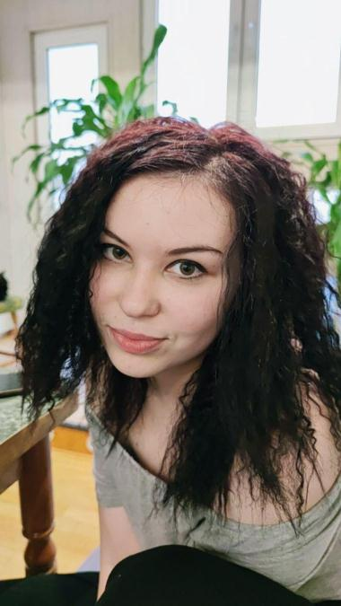

ОБО МНЕ
Обязательная, добросовестная, открыта для новых знаний, умею работать как
самостоятельно, так и в команде. Прошла обучение в Гёте Институте
(2011-2015) и владею немецким языком на уровне С1.3. Английский язык –
разговорный (со словарем). Уверенный пользователь ПС (Word, Excel),
хорошее знание интернета, офисной оргтехники. Общий стаж работы - более 10 лет.
ОБРАЗОВАНИЕ
- 2010-2013гг. - Академический Лицей №3 при ТГТУ (социально-гуманитарное направление)
- 2014-2018гг. - Московский Технологический Институт (менеджмент, маркетинг)
ПОСЛЕДНИЕ МЕСТА РАБОТЫ
УНЦ ООО "BILIMINTERTRANS" (2021г.-наст.вр.)
Менеджер офиса, отдел кадров
- Ведение документооборота.
- Ведение кадрового делопроизводства.
- Работа с клиентами по телефону, деловая переписка.
- Бухгалтерия, 1С 8.3
ИП ООО "VISAMETRIC" (2018-2021гг.)
Менеджер отдела визового сопровождения/кассир
- Проверка, обработка, оформление и регистрация документов.
- Работа с клиентами по телефону, консультирование, деловая переписка, ведение документооборота.
- Перевод документов на немецкий язык.
- Ведение кассовой отчетности, прием денежных средств и оформление договоров.
- Выполнение поручений руководителя и бухгалтера.
- Обучение сотрудников.
OOO «VBM ENJINEERING» (2016-2018гг.)
Офис-менеджер/кассир
- Работа с клиентами по телефону.
- Деловая переписка, ведение документооборота, первичное делопроизводство.
- Организация жизнедеятельности офиса.
- Оформление операций по приему и выдаче денежных средств.
- Ведение кассовой отчетности, учет и контроль денежной наличности.
- Выполнение поручений руководства.
НОУ «Detskaya Planeta» (2015-2017гг.)
Преподаватель немецкого языка
- Обучение и воспитание учащихся (1- 6 классы).
- Ведение классного руководства.
- Обеспечивание уровня подготовки обучающихся, соответствующего требованиям гос. образовательного стандарта.
Республиканский культурный центр немцев Узбекистана (2013-2017гг.)
- Написание статей для сайта.
- Организация молодежных проектов.
- Ведение кружка рукоделия для молодежи.
- Проведение семинаров и тренингов на различные темы для молодежи.
- Перевод проектной документации на немецкий язык.
- Участие в молодежных (танцевальных, театральных) проектах.
- Волонтерская деятельность.
КОНТАКТЫ
+99890 906 50 54
Телеграм